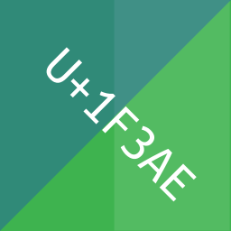
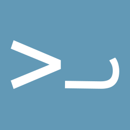
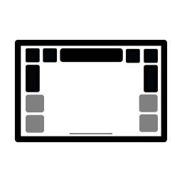
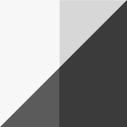

Nothing - Anything - Everything




Kugiverse is the collection of Kugi's creations and interests - Software, Music, Games, Basically Anything But nothing world changing.
Kugi Eusebio, a software engineer by profession, loves formulating random ideas and realizing them. They enjoy working on side projects such as contributing to FOSS projects, mainly the Ubuntu Touch (UBports) project.
Ulap ni Kugi is a self-hosted Nextcloud server. Anino ni Kugi is a Youtube channel mostly showcasing Ubuntu Touch but can be anything. Musika ni Kugi are random sounds Kugi makes and occasional actual music.